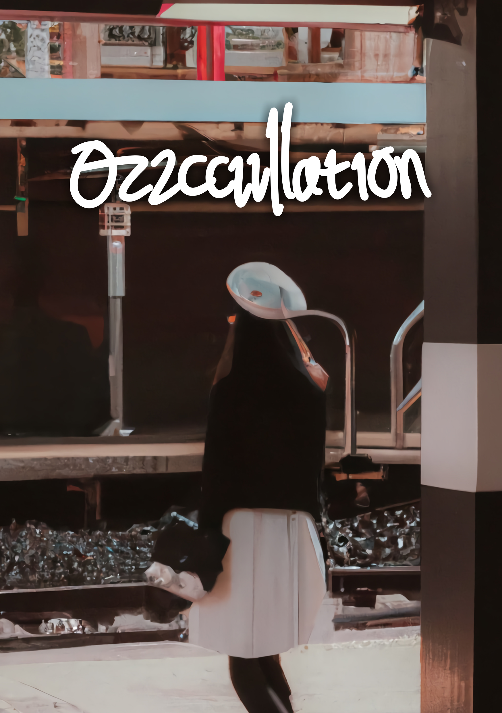

Oscillation - LeanDika
Sebuah kisah tentang Handika Sastro Atmodiharjo, seorang murid SMA jenius yang hari-harinya mulai diwarnai oleh gadis berbaret putih yang dia temui di Stasiun Kereta Api Bandung. Dia datang sebagai murid pindahan di SMA 15 Bandung dengan membawa misi rahasia untuk mengembangkan perangkat yang menggunakan gelombang elektromagnetik untuk merekayasa atom Plutonium-241. Hari-harinya di SMA begitu indah dengan keberadaan gadis itu. Leana Flory Lafina telah merubah pandangannya mengenai dunia ini. Dunia hitam di atas putih yang telah lama ia kenal menjadi dunia yang begitu berwarna, dunia yang begitu indah, dunia yang penuh dengan kebahagiaan.
Seluruh karakter dan alur dalam cerita ini bersifat fiktif belaka. Cerita yang disampaikan hanya bertujuan sebagai hiburan dan sangat tidak direkomendasikan untuk ditiru maupun dijadikan acuan.